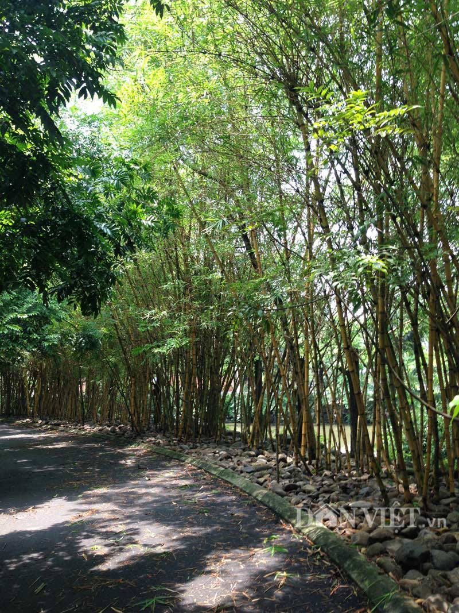

Xứ lạnh vào khoảng giữa mùa xuân và giữa mùa thu thời tiết ấm áp. Vạn vật, đặc biệt là thảo mộc, hình như biết là những ngày nắng ấm sẽ qua nhanh nên "trưởng thành", đâm chồi, nẩy lộc, trổ lá, đơm bông, kết trái rất là vội vã so với thảo mộc của miền nhiệt đới. Nếu để ý quan sát, thì chỉ cần một đêm thì cảnh vật chung quanh đã đổi khác rất nhiều. Hay có lẽ đây chỉ là cảm nhận của những người sống nơi cực bắc của trái đất, cũng như thảo mộc, trong lòng luôn chờ đợi, vui đón và tận hưởng những ngày nắng ấm. Từ màu trắng quen thuộc, buồn bả và chán ngấy của tuyết vây phủ bốn phía suốt mùa đông dài thay vào đó đủ màu sắc rực rỡ của cỏ cây hoa lá, một sự thay đổi mà hình như dân xứ lạnh luôn chờ đợi và mở rộng vòng tay đón tiếp mỗi năm.
Chiều qua, đến thăm viếng người thầy cũ. Nhìn khu vườn "quê hương bỏ túi" của thầy, ngoài những giống hoa, cây kiểng bản xứ thì còn vài chậu mai, trúc kiểng, quỳnh... và những loại hoa kiểng khác mà thầy và bạn bè của thầy đã cho phép chúng "nhập cảnh" lén, vì ở Bắc Mỹ (Mỹ, Canada) qui định về nhập cảnh các loại thảo mộc lạ rất chặt chẽ. Thầy tôi, ở tuổi về hưu, nên có thì giờ và có lẽ cũng như nhiều người Việt sống lưu vong khác, thầy "mang theo quê hương của mình ra đất khách" như có thể "làm" được. Đây là một điểm đặc thù của dân Việt Nam mà ít có giống dân khác giống. Chữ "quê hương" ở đây bao gồm tập tục, thói ở, nết ăn, tính tình, văn hoá... Nói chung thì cho đến nay, trên xứ người, thì "quê hương" mà người Việt sống tha hương mang theo có nhiều ưu điểm. Thí dụ như món phở, thì đã đủ sức đương cự với pizza của Ý, sushi của Nhật, chaomien của Tàu... và đã trở thành một món ăn khá "quen thuộc" với một số dân chúng ở Mỹ, Canada và một số nước ở Châu Âu. Cả tổng thống Mỹ Bill Clinton cũng đã từng "xơi ngon lành" hai tô phở và dĩa gỏi cuốn một lượt, trong một bửa ăn. Lẽ dĩ nhiên "quê hương" của người Việt mang theo ở xứ người cũng không thể tránh được khuyết điểm như vụ "rau muống ở Florida". Rau muống do người Việt tỵ nạn thả trồng trong các lạch mương của vườn riêng đã mọc tràn lan ra các hồ nơi du lịch làm cản trở sự đi lại của du thuyền của du khách. Tiểu bang Florida đã phải bỏ ra hàng triệu đô để dọn và diệt trừ rau muống vì du khách là một trong những nguồn thu nhập chính của tiểu bang. Hiện nay, rau muống đã trở thành món rau "quốc cấm" cho dân Việt ở Florida. Và "tính đi trễ" của người Việt trong các buổi lễ hội của cộng đồng, đặc biệt là đi dự đám cưới, cho đến nỗi người ta đã có câu ví: " không say không phải Mễ, không trễ không phải Việt Nam".
Quê hương người Việt tha hương mang theo là một câu truyện dài. Tôi xin trở lại chủ ý chính của bài viết hôm nay về hoa nói chung và đặc biệt hoa tre. Tre một loài cây chỉ nở hoa lúc cuối đời.
Trên trái đất, có muôn vạn loài hoa, mỗi loài có một nét đẹp và hương sắc riêng. Từ trinh nữ, lan rừng... sinh trưởng nơi hoang dã không cần bàn tay chăm sóc cho đến những hoa hồng rực rỡ kiêu sa trong những vườn hoa, những chậu lan quí được chủ nhân chăm sóc cẩn thận. Mỗi loài hoa, chúng ta biết hay chưa biết, hình như đều ẩn chứa một huyền thoại. Ai đã từng thức đêm ngắm hoa quỳnh nở chắc khó dằn được cảm xúc trước cái đẹp của hoa quỳnh, nhìn những cánh hoa cong trắng nõn nà, nhụy hoa điểm xuyết màu vàng, hương hoa ngào ngạt, ngây ngất, và chỉ qua đêm là hương sắc đã tàn phai. Nhìn hoa sen, chợt nhận ra lẽ vô thường của kiếp người, sự thanh cao, trong sạch của các bậc giác ngộ. Ai sẽ không buồn khi nhìn thấy hoa ty-gôn, hình tim vỡ, đỏ như màu máu và liên tưởng đến những câu thơ của TTKH. Như người xưa một lần qua núi, thấy hoa lau nở trắng bạt ngàn, đã phải buông ra một câu hỏi buồn với rặng phi lau: Sao vừa nở ra đã vội bạc đầu thế hở lau ơi?... Và có một loài cây chỉ nở hoa lúc cuối đời, nở xong là chết, nở như biết mình đã đến và sẽ ra đi trong cuộc đời, nở như để dọn đường giã từ sự sống. Tre và hoa tre chết đứng chứ không rủ xuống như bao loài hoa khác, tre và hoa như đang thi gan cùng tuế nguyệt. Một hình ảnh hiên ngang và bất khuất giữa trời đất mênh mông, giữa muôn ngàn giống loài của thảo mộc. Thản nhiên trong cõi đi về tựa như một triết nhân đã ngộ được chân lý về sự sống chết của cuộc đời.
Trên thế giới, Việt Nam không phải là một quốc gia duy nhất có tre. Trừ Châu Âu và một số ít vùng Châu Úc, tre gần như có mặt ở khắp nơi. Tre có tên khoa học là Bambysaceae, lấy từ gốc Mã Lai là Bambu, xếp chung cho các loài tre - trúc. Ở Việt Nam, tre mọc rất nhiều và khắp nơi. Ngoài được trồng ở thôn xóm, làng xã... tre còn mọc tập trung thành rừng từ Bắc chí Nam. Tre gồm hơn 40 loài và 15 giống khác nhau như: Hoa, Bương, lồ ồ, gai, vầu, mỡ, nứa, tàu, mạnh tông, tầm vông, trinh, giang, le, trúc, là ngà v.v... Ở Mỹ, thì có khu Vườn Tre (Bamboo Garden) của trường Foot Hill College, thành phố Los Altos, tiểu bang California. Khu vườn tre này có khoảng 70 loại tre trên thế giới, từ các loại tre ở miền nhiệt đới cho đến các loại tre miền ôn đới. Thông thường thì tre đươc trồng bằng gốc, và một gốc tre được ươm trồng thì hai năm đầu chỉ bén rễ, đến năm thứ ba thì mới có măng (tre non). Vì nhu cầu kỹ nghệ, con người đã nghĩ cách trồng tre bằng hạt, nhưng chu kỳ ra hoa, kết quả của tre thường lâu: từ 5 đến 60 năm 1 lần và sau khi ra hoa tre thường chết hàng loạt. Gần đây, các nhà khoa học Ấn Độ đã nghiên cứu kỹ thuật kích thích tre nở hoa trong phòng thí nghiệm bằng dung dịch gồm có nước dừa, muối khoáng, đường, vitamin. Kết quả sau 15 - 20 ngày, tre đã nở hoa.
Đã là người Việt Nam thì ai cũng biết cây tre, nhưng tôi nghĩ rất nhiều người không có dịp để thấy được "tre nở hoa". Tôi chỉ có dịp thấy hoa tre nở một lần vào giữa thập niên 60, những bụi tre gai ở góc vườn hương quả của tổ tiên, bung nở từng chùm hoa vàng nhạt như màu đất, xen giữa màu xanh của lá tre. Tôi không nhớ là bao lâu, những cây tre từ màu xanh dần chuyển sang màu ngà. Cho đến một hôm nọ thì thân tre đã khô lại. Ở trên cao, những chùm hoa tre khô cong đong đưa trong gió như những bàn tay đang vẫy chào tiễn biệt. Tôi nhớ là Nội tôi thường ra vườn nhìn những bụi tre nở hoa và khe khẽ thở dài. Hình như Nội đã tiên đoán một điều gì đó sẽ xảy ra. Những năm kế tiếp sau đó, thì chiến tranh lan tràn đến làng tôi, bom đạn đã làm cháy hết cả nhà cửa, vườn tược, gia đình tôi đã phải dọn về tỉnh ở. Từ sau 75, thì dịu vợi quan san cách trở, tôi chưa có dịp để trở về thăm lại khu vườn xưa, có lẽ đã đổi chủ. Nhưng hình ảnh của quê nhà và bụi tre nở hoa như vẫn còn khắc đậm trong tâm trí. Ký ức hiện về và rõ ràng như những đoạn phim quay chậm.
Cây tre gắn bó với dân Việt Nam tự ngàn xưa Tôi nghĩ đã là người Việt Nam, dù ở đâu và làm gì, ai cũng mang trong mình một bóng tre của quê hương, xứ sở. Sau lũy tre làng, nơi quây quần chia xẻ buồn vui của cuộc sống của những cộng đồng người Việt từ hàng bao thế hệ. Hai chữ lũy tre thường gợi cho người nghe hình ảnh tươi mát thân yêu của một làng quê bên nội hay bên ngoại nào đó. Và không biết tự bao giờ, tre đã tham dự vào cuộc sống người Việt như một thành tố không thể thiếu được. Chuyện cổ tích về tre thì cũng có nhiều như trong huyền sử Việt Nam, có truyện Phù Đổng Thiên Vương giúp vua đánh đuổi giặc Ân để cứu nước và giữ nước. Roi sắt bị gãy, Phù Đổng Thiên Vương nhổ tre hai bên đường làm vũ khí để đánh đuổi giặc Ân. Hễ bụi này tan thì chàng trai làng Gióng lại ném đi và nhổ bụi khác. Cứ thế cho đến khi giặc tan tác, đầu hàng, thì chàng cỡi luôn ngựa sắt bay lên núi Sóc để về trời. Tôi chưa được tới thăm quê Thánh Gióng để chiêm ngưỡng di tích huyền sử. Nhưng theo lời kể lại, của những người đã có dịp viếng thăm, thì hai bên đường lên núi Sóc người ta còn thấy những ao lớn, theo truyền thuyết thì đây là dấu chân của ngựa sắt để lại, và những bụi tre nghiêng ngã tự bao đời là cháu chắt của những bụi tre Thánh Gióng ném ngày xưa. Lại có chuyện đời xưa kể rằng vào một mùa Đông, khi tuyết phủ khắp mọi nơi thì bà mẹ Mạnh Tông trở chứng thèm măng. Mùa Đông làm gì tre có măng, Mạnh Tông thương mẹ quá, đành đội tuyết ra ôm gốc tre khóc lóc năn nỉ xin một búp măng để vui lòng mẹ. Lòng hiếu của Mạnh Tông đã làm cảm động gốc tre già và một mầm măng nhú lên như phép lạ. Phải chăng tre cũng có hồn và tấm lòng để hòa đồng và cảm thông với con người?
Cây tre có mặt trong truyện cổ tích, trong thi văn, trong hội họa, trong âm nhạc. Trong các loại nhạc khí cổ truyền của Việt Nam thì có cây sáo trúc và cây đàn bầu được chế tạo từ họ nhà tre, rẻ tiền, dễ kiếm, cấu trúc đơn giản nhưng âm thanh lại cực kỳ phong phú. Cái khèn của dân miền núi, cái đàn t’rưng cũng từ tre mà ra. Cái mõ ở chùa làm bằng gỗ, thường là gỗ mít, nhưng cái mõ của làng lại làm bằng tre. Dù trong thời buổi kỹ thuật tân tiến hiện đại, tre vẫn là hình ảnh một thành tố quen thuộc thân yêu gắn bó với dân Việt. Hình ảnh là cái đòn gánh bằng tre nhịp nhàng đàn hồi theo bước đi làm nhẹ vai cô thôn nữ gánh nước từ bến sông, gánh hàng ra chợ bán. Hình ảnh chiếc nón lá với mười sáu vành tre che nắng, che mưa của những người mẹ Việt tảo tần ngược xuôi, lo lắng sinh kế để nuôi đàn con khôn lớn. Hình ảnh duyên dáng của những cô gái Việt bẽn lẽn, e ấp dấu nụ cười duyên với người tình dưới chiếc nón lá "bài thơ". Như nhiều dân tộc Á Đông khác chịu ảnh hưởng của nền văn hóa Trung Hoa, Tết Nguyên Đán của ta cũng bắt nguồn từ phuơng bắc, nhưng với cây nêu tre và bánh chưng, bánh tét (buộc với lạt giang - giang cũng thuộc vào họ nhà tre- ) thì Tết Nguyên Đán đã trở thành Tết Việt Nam. Kể sao cho hết những đóng góp của tre cho đời sống của dân Việt từ ngàn xưa đến nay. Tre thủy chung một mối tình vĩnh cửu với người dân Việt. Tre lặng lẽ hiến dâng cho đời và hy sinh tất cả. Trong hành trình dâng hiến của mình, tre dâng tặng con người âm thanh từ máu thịt của nó. Tre tạo nên tiếng sáo trúc như tiếng Trương Chi đã làm điêu đứng Mỵ Nương, người con gái cành vàng lá ngọc. Tre tạo nên cây đàn bầu khiến cả thế giới phải nghiêng mình trước ngón độc huyền của dân Việt. Tre là vũ khí giúp dân Việt chống đuổi ngoại xâm giữ gìn bờ cõi. Tre lại còn là thực phẩm ngon cho con người (măng tre).
Trong ký ức tuổi thơ của tôi, thì đầy ắp những kỷ niệm với tre, ống thục bằng trúc, cần câu cấm bằng tre gai, cần câu cá sông thì bằng trúc, sườn diều bằng tre hay trúc... Và nhớ luôn cả cái ngu lúc còn đi học khi đọc bài ca dao "Lính Thú Đời Xưa" và dõng dạc "tuyên bố" giữa lớp là: " bài ca dao trật vì cây mai làm sao có măng?" Đến nỗi ông thầy dạy Việt văn phải bật cười. Vì trong thực tế, ở ngoài Bắc, có một loại tre cũng được gọi là "mai".
"Ba năm trấn thủ lưu đồn,
Ngày thời canh điếm, tối dồn việc quan.
Chém tre, đẳn gỗ trên ngàn,
Hữu thân hữu khổ, phàn nàn cùng ai?
Miệng ăn măng trúc, măng mai,
Những giang cùng nứa, lấy ai bạn cùng?
Nước giếng trong, con cá nó vẫy vùng!"
Và khi đọc câu ca dao ví von về khó khăn:" Nhất đốn tre, nhì ve gái" thì tôi đã hết hiểu nổi luôn, nhưng im thin thít. Vì ở vào cái lứa tuổi đó (lớp 6, lớp 7) thì "dù nhất quỷ nhì ma, thứ ba học trò", nhưng "ve gái" là một chuyện, ở vào lứa tuổi đó, hầu hết chúng tôi đều xem đây là một chuyện khó khăn nhất. Mãi sau này lớn lên, và có dịp xem đốn tre và kỷ thuật cần thiết để bảo đảm an toàn cho người đốn thì tôi mới hiểu. Vì đốn tre không đúng kỷ thuật thì người đốn có thể bị thương hay mất mạng do "sức bật" của cây tre bị đốn. Còn "ve gái" thì cùng lắm là bị cho "de" hay tệ hơn là bị cho "ăn guốc".
Theo luận án của võ sư Nguyễn văn Sen, môn phái Vovinam, Việt Vỏ Đạo: " Theo quan niệm đông phương, tre - trúc tượng trưng cho mẫu người quân tử. Cứng mà mềm mại, đổ mà không gãy, lòng rỗng không, biểu tượng cho tinh thần và khí độ an nhiên tự tại, không mê đắm quyền vị, vật chất của mẫu người quân tử Á Ðông. Trúc hợp với Mai để làm một cặp biểu trưng thể hiện phẩm tính Âm - Dương, Cương -Nhu, nói lên tình cảm và hào khí dân tộc Việt. Một dân tộc có tiết tháo, phẩm hạnh vừa kiêu hùng, vừa quân tử. Ngoan cường nhưng hiếu hòa, độ lượng." Và " bắt nguồn từ các quan điểm trên, nhưng phong phú hơn, Vovinam Việt Vỏ Ðạo quan sát cây tre ở nhiều góc độ để xây dựng một con người vừa cao quí như một bức tượng thần để chiêm ngưỡng, là mục đích để noi theo, đống thời cũng là một con người bình thường gần gũi, hòa nhập với cộng đồng để mưu tìm hạnh phúc bình dị, chấp nhận mọi hoàn cảnh, mọi mẫu người. Coi đó như một tất nhiên và hóa giải các tất nhiên đầu mâu thuẩn bằng nguyên lý cương nhu phối triển. Cho nên, TRE còn là biểu tượng cho yếu lý võ thuật."
Tóm lại, nếu " người ta là hoa của đất" như tục ngữ nói, và tùng bách là biểu hiện của ngươì quân tử ẩn dật, thì tre là biểu tượng của ngươì quân tử dấn thân. Từ khi sinh ra, tre đã sống và trả nghĩa cho đất cho người. Khi tre nở hoa cũng là lúc tre giã từ cuốc sống. Một cái chết hùng tráng, không cho người cảm giác bi ai, não nùng của sinh tử biệt ly. Tre nở hoa trước khi chết. một cách đi vào cõi chết rất đẹp, ung dung tự tại tựa như một triết nhân đã giác ngộ chân lý về lẽ sống chết của cuộc đời.
Chúng ta là hoa của đất đang đi những trên con đường đầy hoa trong cuộc sống. Muốn vội vàng thì cứ vội vàng, muốn la cà thì cứ la cà, muốn dùng dằng thì cứ dùng dằng, muốn vương vấn bước chân thì cứ vương vấn... Trời đất vần xoay, vạn vật biến chuyển, có lúc nào đường sẽ không hoa chăng? Có hoặc không, chắc không ai có thể trả lời cho bạn và tôi. Thôi thì cứ dấn thân vào vạn nẻo đường đời gần xa của cuộc sống và tự mình tìm cho mình câu trả lời.
Chúc bạn và tôi một cuối tuần vui!
Lý Lạc Long
(TTL/TCT/MAI/4/8/2005)